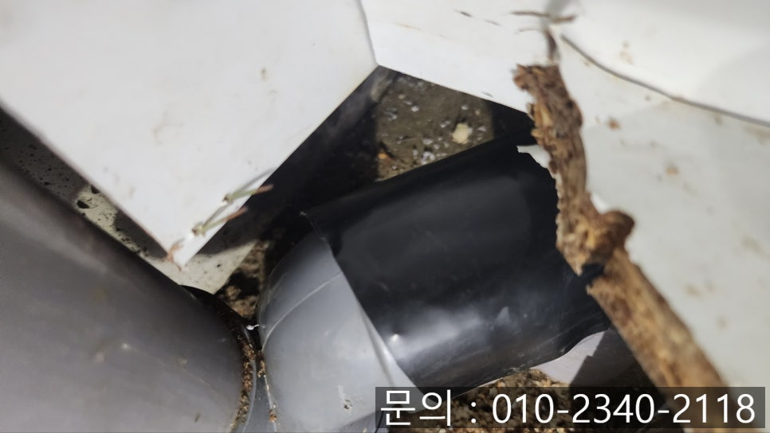
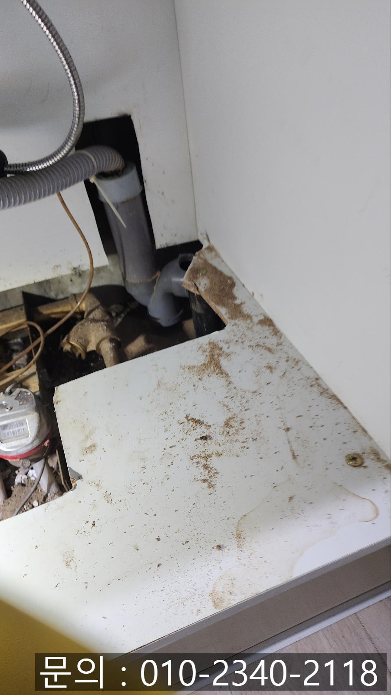
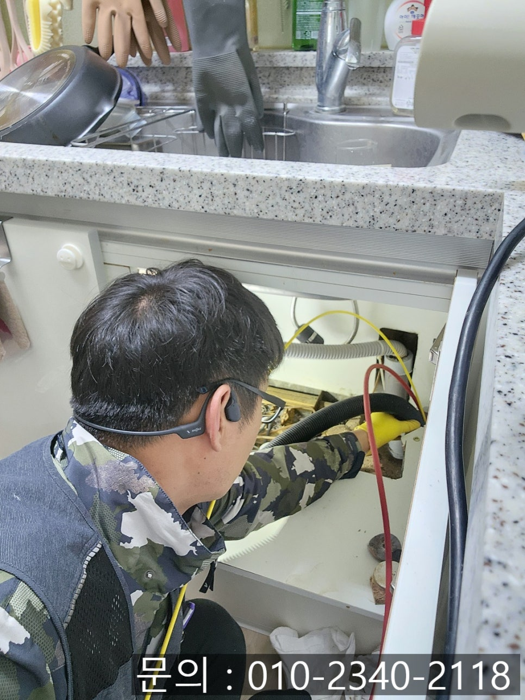
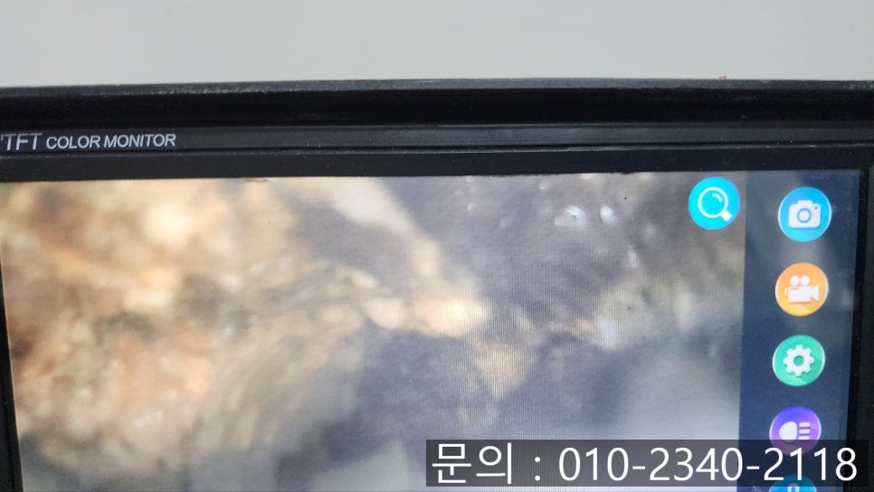
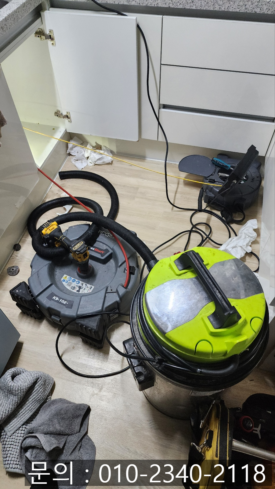
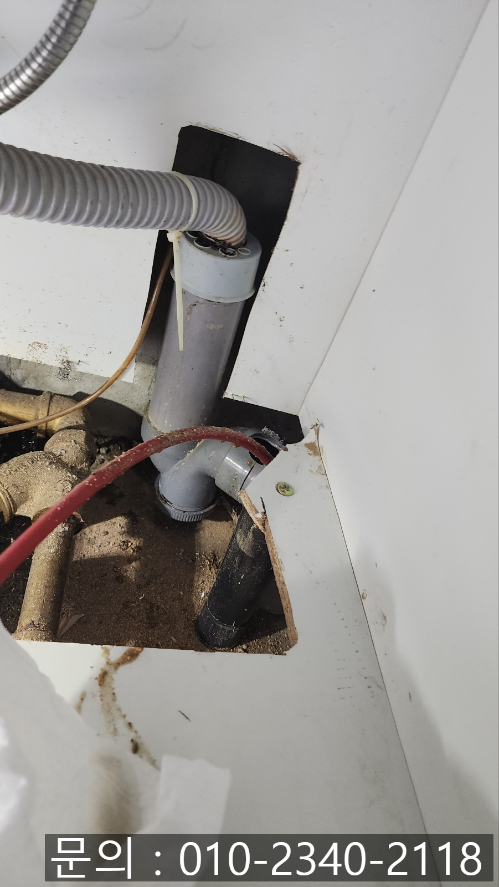

🏠 마도면 싱크대 막힘 비봉면 아파트 하수구 역류할 때 뚫어주는 업체
화성 마도면 싱크대막힘 전문 시공 후기

📋 작업 개요
- 위치: 화성 마도면, 마도면, 화성
- 서비스 유형: 싱크대막힘, 하수구막힘, 배관막힘, 역류해결, 뚫는업체, 배관청소
- 작업 일시: 2025. 2. 21. 9:37
- 업체명: 하수구수사대 (010-5615-2118)
🔍 문제 상황
안녕하세요.
마도면 싱크대 막힘, 비봉면 아파트 하수구 역류할 때 뚫어주는 업체 하수구 다큐입니다.
우리가 생활하는 주변에 있는 수많은 하수구는 우리가 사용한 물을 건물 밖으로 흘려보내주는 중요한 역할을 하고 있는데요.
대부분의 사람들은 하수구의 역할에 대해 크게 신경 쓰지 않고 생활하실 거예요.
하지만 갑자기 사용하던 싱크대에서 물이 내려가지 않고 마도면 싱크대 막힘이 발생하게 된다면 음식을 준비하기 위해 재료를 준비하거나 설.거.지 등이 어려워지면서 불편해지게 됩니다.
마도면 싱크대 막힘으로 하수구 다큐가 해결해 드리고 온 현장의 경우 주방에서 사용한 물이 답답하게 흘러가자 연락을 주셨습니다.
🔎 원인 분석
💡 전문가 진단: 정밀 진단 장비를 사용하여 슬러지의 고착 여부를 판명하고 타격/세척 작업을 실시했습니다.
고객님께 주소를 전달받아 신속하게 방문해 점검을 시작했는데요.
싱크대 배관을 살펴보니 테이프로 붙여져 있는 부분을 찾을 수 있었어요.
고객님께 여쭤보니 몇 달 전에도 마도면 싱크대 막힘이 발생해 다른 업체를 불렀는데 피트랩으로 배관 부분에 구멍을 뚫어 작업을 해주셨다고 말씀하셨습니다.
피트랩은 봉수 현상을 이용해서 배관 안에 물이 고여있게 만들어 아래서 악취가 올라오지 않게 도와주는 역할을 하는데요.
트랩 중간에 칸막이가 있다 보니 장비가 진입할 수 없어 이전 업체에서 구멍을 내 작업을 진행하셨던 것 같습니다.
비봉면 아파트 하수구 역류할 때 뚫어주는 업체 하수구 다큐는 배관이 뚫려있는 부분에 석션을 이용해 고여있는 이물질을 우선 제거한 다음 배관의 상태를 점검해 보기로 했어요.
배관의 구조를 파악해도 내부에 쌓인 이물질은 눈으로 직접 확인할 수 없다 보니 꼭 내시경 카메라를 이용해 확인해야 합니다.

🔧 작업 과정
몇 달 전에 청소한 배관이라고 하셨는데 생각보다 많은 이물질이 쌓여있었습니다.
고객님께 배관 스케일링을 한 게 맞냐고 여쭤보니 먼저 방문했던 업체에서는 다른 장비를 이용해 작업했다고 하시면서 내시경으로 배관 내부를 볼 수 있는 건 처음 알았다고 스케일링 진행해달라고 요청하셨습니다.
카메라로 이물질의 위치를 관찰하면서 플렉스 샤프트를 이용해 기름 슬러지를 제거할 계획이에요.
플렉스 샤프트 장비는 노즐 끝에 달린 체인이 배관 내부에 진입해 360도로 회전하면서 이물질을 타격해 제거하는 역할을 하게 됩니다.
잘게 갈린 기름 슬러지는 석션을 사용해 빨아드려 완벽하게 제거하는 작업을 반복해서 진행해 주게 됩니다.
아직도 일부 설비 업체들의 경우 주먹구구식으로 대충 일하는 경우가 많은데요.
비봉면 아파트 하수구 역류할 때 뚫어주는 업체를 찾으실 때는 기본적으로 내시경 카메라 같은 전문적인 장비를 갖추고 있는지 확인하셔야 합니다.
수차례 플렉스 샤프트로 기름 슬러지를 잘게 부서 주고 석션으로 빨아들여 제거하자 조금씩 배관이 모습을 드러내기 시작합니다.
많은 양의 기름 슬러지와 음식물 쓰레기 각종 이물질이 석션으로 제거된 걸 확인할 수 있었어요.
아직 잔여 이물질이 남아있는 걸로 확인되어 몇 차례 추가 작업을 진행해 남김없이 이물질을 제거했고요.
말끔해진 배관을 확인할 수 있었습니다.


✅ 작업 완료
지켜보시던 고객님도 청소를 한다고 새것처럼 깨끗해질 줄 몰랐다고 좋아하셨어요.
마지막으로 다시 배관의 구멍을 막은 다음 물을 사용해도 막힘이나 역류 없이 통수가 잘 진행되는 것까지 확인한 뒤 장비를 챙겨 철수할 수 있었습니다.
경기도 화성시 동탄대로 677-10 7층 715-A10호




⚠️ 주방 싱크대 배관 막힘 예방 수칙
- ✅ 기름기가 묻은 식기나 프라이팬은 설거지 전 키친타올로 반드시 기름때를 닦아내세요.
- ✅ 주기적으로 싱크대 개수대에 뜨거운 물을 가득 받아 한 번에 내려 배관 내부 기름을 씻어내세요.
- ✅ 배수구 거름망을 미세한 필터로 사용하시고 음식물 찌꺼기가 틈으로 새어 들지 않게 관리하세요.
- ✅ 베이킹소다와 식초를 뜨거운 물과 함께 일주일에 한 번씩 부어주면 배관 살균과 막힘 예방에 좋습니다.
💡 핵심 정리
- 확실한 장비 작업(내시경 점검 및 샤프트 스케일링)으로 원인을 뿌리 뽑습니다.
- 작업 후 1년 이내에 동일한 부위 재발 시 100% 무상 A/S 서비스를 보장합니다.
- 서울 · 경기 · 인천 전 지역에 24시간 언제든 긴급 출동할 수 있도록 항시 대기 중입니다.
❓ 자주 묻는 질문 (FAQ)
🚨 화성 마도면 싱크대막힘 문제로 고민이신가요?
정확한 원인 진단과 확실한 시공으로 재발 없는 해결을 약속드립니다.
24시간 긴급 출동 | 서울 · 경기 · 인천 전지역 | 1년 내 재발 시 무상 A/S